- 
- 회사소개
회사소개
CEO 인사말
빙그레는 자율과 책임이 조화를 이루는 스마트한 기업 문화를 조성하고
비즈니스 파트너와 함께 가치를 공유하는 기업으로 발전해 나가며
고객으로부터 지속적인 사랑과 신뢰를 받을 수 있도록 노력하겠습니다.

안녕하십니까 고객 여러분!
빙그레 대표이사 전창원입니다.
빙그레는 지난 1967년,
유가공 산업발전과 국민 생활 건강에 이바지 하기 위해 설립되었으며,
이제는 세계를 무대로 활동하는 글로벌 기업으로 성장하고 있습니다.
빙그레는 그동안 다양하고 혁신적인 제품을 개발하고 새로운 사업과 시장에 도전하면서
대한민국의 식품산업 발전은 물론 국민의 건강과 행복을 이끌어 왔습니다.
가공우유 1등 ‘바나나맛 우유’, 국내 최초 카톤 아이스크림 ‘투게더’,
떠먹는 요구르트의 대명사 ‘요플레’, 전세계인의 사랑을 받고 있는 ‘메로나’ 등은
국민과 함께 성장해온 자랑스러운 제품들입니다.
빙그레는 이제 식품산업뿐만 아니라, Health, Nutrition, Wellness 등으로
사업 영역을 넓히고, 건강 지향적 라이프스타일 비즈니스를 실현하는
새로운 기업으로 변화해 가고 있습니다.
또한 지속가능한 미래와 기업의 사회적 책임을 다하고자
ESG(Environmental, Social and Governance) 중심 경영을 강화해 나가고 있으며,
최근 ESG평가(KCGS)에서 4년 연속 통합 A등급을 받기도 했습니다.
앞으로도 빙그레는 자율과 책임이 조화를 이루는 스마트한 기업 문화를 조성하고,
비즈니스 파트너와 함께 가치를 공유하는 기업으로 발전해 나가며,
고객으로부터 지속적인 사랑과 신뢰를 받을 수 있도록 노력하겠습니다.
"건강과 행복을 함께 나누는 밝은 미소의 메신저 빙그레"의
이러한 노력과 미래를 위한 도전을 지켜봐 주십시오.
감사합니다.